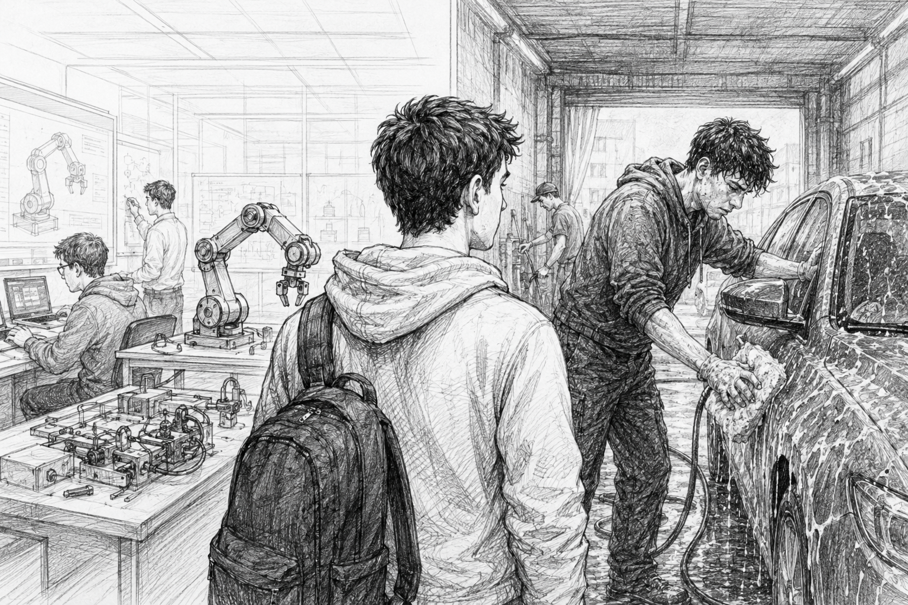

Project Essay
Would your first job be at a Robotics firm or a Car Wash?

A section from Joe Rogan Experience #2494 - Chamath Palihapitiya has stayed with me. The clip starts around 2:12:40 and runs through about 2:30:00, but the part that hit hardest was the story about a kid working two jobs: one at a robotics firm and one at a car wash.
The obvious prestige signal is robotics. The stronger life signal might be the car wash.
Not because the work is glamorous, but because it is not. You are tired, uncomfortable, and often unseen. You still have to show up. You still have to do it well. That repetition builds a kind of discipline that cannot be faked.
Doing work that sucks is not the goal. It is the training ground. It teaches you to separate mood from standards. It teaches you to execute even when motivation is missing. It forces humility, and humility keeps you coachable.
When you are young, that is a gift, even if it feels like a punishment in the moment. You usually do not know how things will turn out. But you are quietly building the process muscles: consistency, focus, patience, and pride in craft.
Then, one day, you get to apply those same muscles to something you actually love. That is where the compounding begins. The effort feels different. The hours still hurt, but they mean more. The grind becomes creative fuel.
I keep coming back to the same image from that conversation: the engine room. It is hot, loud, and uncomfortable, but it is where movement happens. It is where the ship gets powered.
If I am choosing between looking polished and being in the engine room, I want the engine room.
Source: Joe Rogan Experience #2494 - Chamath Palihapitiya (2:12:40-2:30:00)